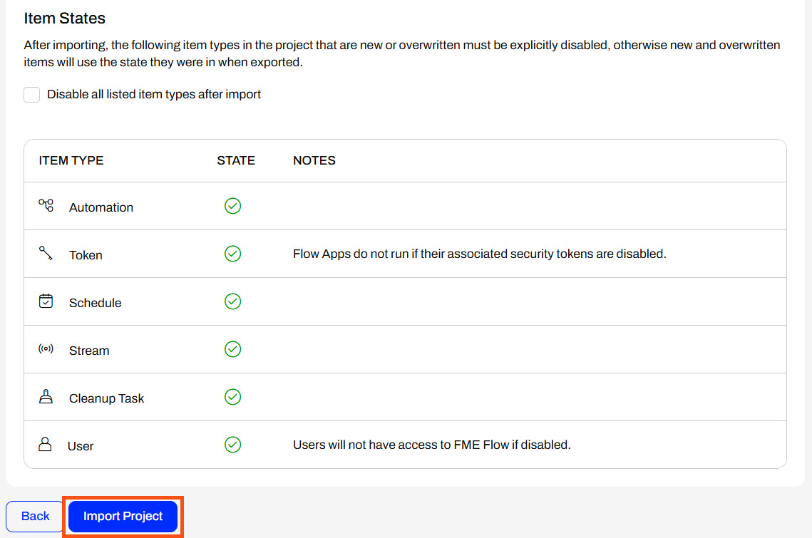
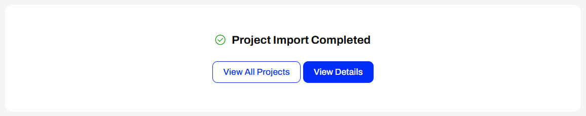
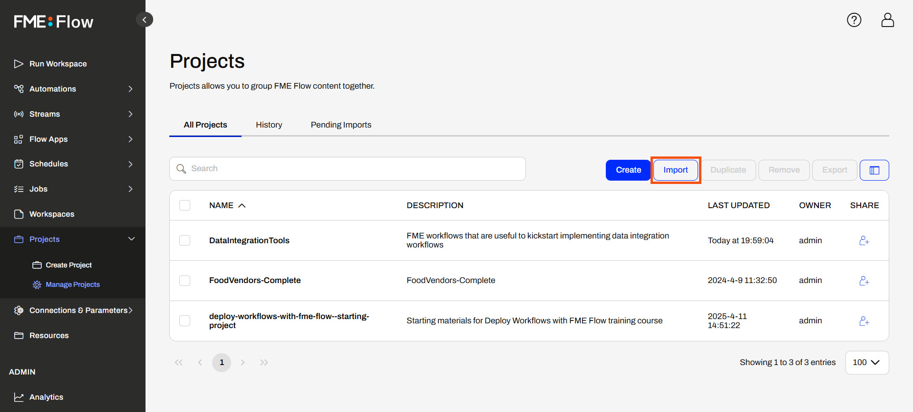
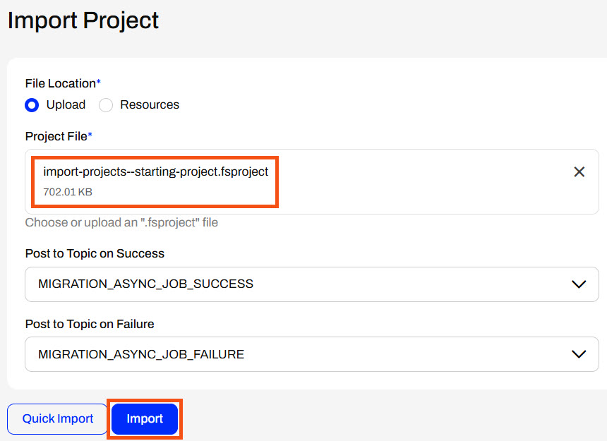
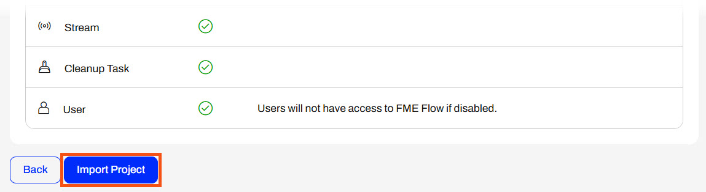
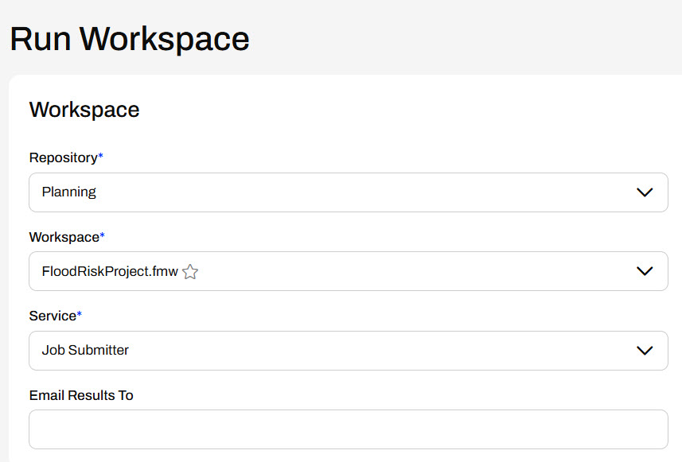
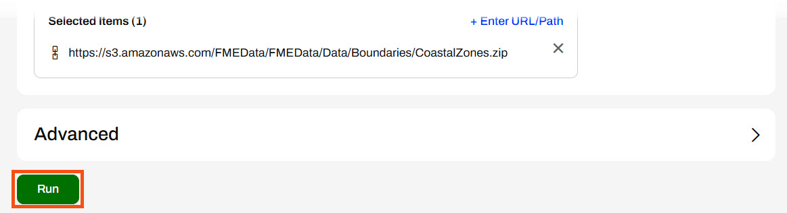
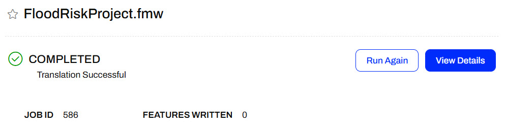

Under Additional Options, you may disable items you do not want to run or use immediately after import completion. For example, an Automation may immediately begin running if it is enabled.

Whether you select Import or Quick Import, the last step is completing the import. Once you click Import Project, FME Flow imports the items and displays the import status.

Testing your workflows after migrating them between FME Flow instances is always a good idea. After a successful import, you will see the newly added project items among the existing content on your FME Flow.

To import a project that you exported with sensitive data, you must ensure the encryption keys match between the FME Flow instances; otherwise, the project import will fail. For more information on System Encryption and Projects, see our documentation.
Exercise


Sven has been busy creating workflows ready to be deployed on the city's production FME Flow. He has developed and exported a project from Planning's development FME Flow and sent it to Frank to import onto the production FME Flow instance.
Follow along with Frank as he imports Sven's project into FME Flow.
1) Import Project
Frank opens Projects on FME Flow and clicks Import to import Sven's project.

Frank keeps the File Location setting as Upload and then adds Sven's project (C:\FMEData\Workspaces\DeployWorkflowsWithFMEFlow\import-projects--starting-project.fsproject) to the Project File. He does not alter the topic settings and clicks Import.

The first step of Project Import is to Preview Content. Frank sees that most of Sven's project items are New Items; however, the DataValidation Workspace App and its dependencies already exist on FME Flow.

Frank doesn't want to overwrite the existing DataValidation App, or the workspace, repository, and token FME Flow includes as dependencies, so Frank deselects the option to overwrite existing items.
Frank scrolls to the bottom and clicks Continue to go to the next step.
The following two steps - Choose Items and Resolve Owners - do not require any configurations, so Frank clicks Continue to proceed to Additional Options. Frank scrolls to the bottom of the page and clicks Import Project.

The project immediately begins to import. Once the import completes, FME Flow displays the Project Import status.
2) Test Running an Imported Workspace
Now that Frank has imported the project, he will test running one of Sven's workspaces to ensure it runs successfully.
Frank goes to the Run Workspace page and configures the FloodRiskProject.fmw workspace in the Planning repository to run.

Frank does not alter any of the Published Parameter default values, scrolls to the bottom of the page, and clicks Run.

Sven's FloodRiskProject.fmw workspace runs successfully on FME Flow.

Frank has successfully imported Sven's project to their city's production FME Flow environment.